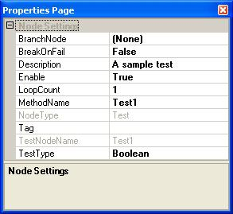
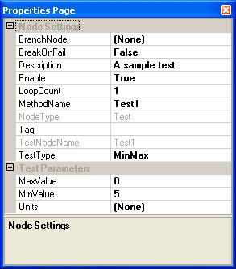

The test node properties apply specifically to test nodes. Each node has its own unique set of properties, and the properties available to a test node are dependant upon the test type. To view a test node's properties in the Properties Page, click on the node in the Test Sequence View. If the Properties Page is not visible, right-click anywhere in the Test Sequence View and click Node Properties. The following shows an example of the properties for both test types:
| Boolean test type: | MinMax test type: |
|  |  |
Click on the following links for a detailed description of each property.
| BranchOnFailNode | BreakOnFail | Description | Enable |
| LoopCount | MethodName | NodeType | Tag |
| TestNodeName | TestType | MaxValue | MinValue |
| Units |
The node to branch to if this test fails. The default value is "None". To change this property, select a node from the drop-down list. As shown in the example below, all group and test nodes in the test program are listed as available branch nodes.
Note: Care should be taken when selecting a branch node to avoid an infinite loop during test execution. For example, using the above illustration, if ReadExcel's branch node is set to WriteExcel, and if WriteExcel does not have a branch node, then if ReadExcel fails every time there will be an infinite loop between WriteExcel and ReadExcel.
If true, the test program will pause before starting execution of the next node if this node fails. This gives the user an opportunity to snapshot the current state of the system to investigate the cause of the failure before continuing the test. If the test was run in debug mode,
An optional, brief description of the test node. If a description was entered while adding a new test node, it will appear here. To change this property, simply delete the current description and type in a new description.
If true, the node is enabled. If false, the node is disabled. When a node is disabled, it is not executed when the test program is run and appears grayed out in the Test Sequence View. If the test node belongs to a group node that is disabled, the test node will not be executed regardless of whether or not the test is enabled.
The number of times the test node will loop. The default is 1 loop. The node will be executed the number of times specified by this property before moving on to the next node in the test sequence. If this node fails and a branch node is specified, the looping will terminate and the branch node will be executed.
The name of the VBScript method that will be executed when this node is active during a test program run. To change this property, delete the current method name and type in the new method name. It is the user's responsibility to ensure that this property contains the name of an existing function in the test script. If the script engine is unable to find the test function, an "Unknown name" error will be generated.
The type of node selected, either "Root", "Group", or "Test". This property is read-only.
A string value that represents any user-defined data associated with the test node.
The name of the test node. This property is read-only.
The type of test, either Boolean or Min/Max. The default value is Boolean. For more information, see Test Types.
This property is only available to test nodes with a Min/Max test type. See Test result properties of test nodes.
This property is only available to test nodes with a Min/Max test type. See Test result properties of test nodes.
This property is only available to test nodes with a Min/Max test type. See Test result properties of test nodes.
See Also
Properties Page | Test Program Properties | Group Node Properties
Astronics Test Systems
Last updated on 11/17/14 by M.Buccat